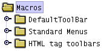
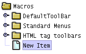
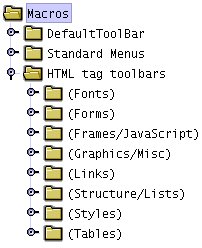
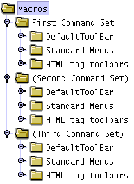

Arachnophilia's menus and toolbars rely almost completely on a command architecture based on
"macros"
,
and the HTML editing features rely completely on macros of various kinds mixed with system commands. This is because macros offer a fantastic amount of flexibility --
using macros, the user can completely change Arachnophilia's appearance and behavior.
The underlying purpose of the macro architecture is to make Arachnophilia capable of doing much more than the author could include explicitly, which is a serious limitation of most modern computer programs. By using macros, Arachnophilia shifts the paradigm away from programs that you simply learn from. You still have to learn about Arachnophilia, but very quickly you turn the tables on Arachnophilia and start
teaching it things
— what you want to do, how you want to do it, with what menus, toolbars, and keystrokes.
Arachnophilia macros can even invoke external Java classes created by the user or third-party sources, so there really is no limit on the degree to which the user can customize Arachnophilia.
Each Arachnophilia macro has:
- A title that appears on menu items and toolbar buttons and that is used to identify the macro internally,
- A "tooltip," a message that appears over a toolbar button or menu item when the mouse cursor is located there,
- An optional icon image (Arachnophilia comes with a large set of icons),
- A "content", which can be one or more of:
- Some text you want to put in your document,
- A specially formatted HTML tag that is used to modify the document content,
- The name of another macro,
- The name of an Arachnophilia system command, like "[Save]",
- The name of an external Java class provided by the user to do specialized work,
- Any combination of the above.
It is important to understand how macros invoke system behaviors:
- A system command has a fixed name like "[Save]", and, when this name is included in a macro, it executes a system command.
- A complete list of system command and descriptions can be gotten with the macro "[ListSystemCommands]," and there is a menu item in the default menu set Tools ... List System Commands that can be used to create the list. If you haven't guessed already, the menu item that makes the macro list is itself a macro. :)
Unlike system commands, macros are editable, copyable, deletable, and have a name that appears on toolbars (optionally) and menu items (always). Nearly all the Arachnophilia menus and toolbars are composed of macros, which means you can change them to suit your own needs.
Now it's time to get your feet wet. Let's make a macro and play with it.
Arachnophilia has two panels in its display — a right panel containing documents to be edited, and a left panel dedicated to macro activities (which, when you want, you may close — just click the left arrow on the dividing bar). Here is a closeup of the left panel (it may not look exactly like this on your copy of Arachnophilia):

Now take these steps:
- Point the mouse cursor at the folder marked "Macros."
- Press the right mouse button.
- Choose "New."
Now the left (macro) panel will look like this --

— and the right panel will show the macro editor. Notice about the right panel that there is a tab at the bottom for the macro editor, and also tabs for any documents you may have had open previously. This means you can switch between the macro editor and any documents you care to, without having to close any of them. I mention this because you will need to do this later on. :)
Now take these steps:
- Move the editing cursor over to the macro editor at the right, to the large central window marked "Macro Editing Area."
- Type something there, a sentence of your choosing.
- At the right end of the panel marked "Shortcut Key" above the main editing area, press the button marked "Define." The program will wait for you to press a key.
- Press Alt-Q (or, if your keyboard doesn't support this key combination, choose another equally obscure combination).
- You may optionally select an icon for your macro by pressing "Choose Icon."
- Move to the bottom of the macro editor and press "Accept."
You have defined a new macro, one that will be activated if you:
- Click it directly, or
- Press the key combination you defined for it.
Now let's open a new, blank document to receive the macro's output. Choose menu item
File ... New ... Text File.
Once the new, blank document is on display, press the key combination you defined for your macro. Your sentence should appear. Then try double-clicking the macro directly — you will see the same result.
Now return to the macro editor by clicking the tab marked "Macro Editor" at the bottom of the right pane. Type this:
Right now, it is [DateTime]
Press "Accept" again, return to the blank text document, and press your defined key combination. Your sentence plus the current date and time should appear. This is an example of a macro that contain both user text and a system command.
Normally you will use the dropdown lists at the bottom of the macro editor display to select system commands and the names of other macros — this is a more convenient method than typing them, and you can avoid typographical errors that may prevent your macros from working.
Here is an example that shows an important property of macros that takes effect if they are used to define HTML tags. Move to the macro editor and type this:
<b>|</b>
The vertical bar "|" has a special meaning if it is included in a macro — if you select some document text and activate such a macro, the text you have selected will be placed at the position of the vertical bar. Try it — enter the above macro, move to the text document, select some text, and activate the macro. The result will look more or less like this:
<b>
My sentence!
</b>
This is a convenient way to wrap a text block in a pair of HTML tags, and it is easy to remember.
Clipboard Support in the Macro Editor
In answer to many inquiries, yes, you can cut, copy and paste text within the macro editor window. Because the macro editor is the repair facility of last resort, the keystrokes for these functions had to be fixed (not user-defined). They are Ctrl+X = cut, Ctrl+C = copy, and Ctrl+V = paste.
Macro Tree Activation and Deactivation
In order to have custom menus appropriate to different tasks, all loaded and available at once, there is a convenient way to make menus and toolbars appear and disappear as needed. Take these steps:
Open the folder named "HTML Tag Toolbars". You will see this (more or less):

Notice there are (parentheses) around the names of the folders. If you select a folder with the mouse and press "x" at the keyboard, that folder will become "visible," meaning:
- If it is a toolbar, the toolbar will appear below the main system toolbar at the top of the screen (if this doesn't happen, press the main toolbar button that looks like this: ),
- If it is a menu, it will appear with the other menus on the Arachnophilia menu bar.
You can make a collection of commands into a menu or toolbar with the macro editor. Note the checkboxes for this purpose on the macro editor display. Remember about these options that a complete tree of commands (a folder that may have other folders "inside" it) can be made into a menu, and that menu will have the appropriate submenus, but a toolbar only has one level, so it cannot contain any macros from subfolders.
You can also manipulate commands and folders in the macro tree display:
- The keyboard arrow keys move the selection point up and down,
- The "+" and "-" keys move the selected item up and down,
- You can cut, copy and paste items or folders using the context (right-click) menu or the usual editing keys Ctrl-X, Ctrl-C and Ctrl-V (this is one of the few places where the menu items and key definitions are hard-wired into the program. Can you guess why this was necessary?).
- You can save all or part of the macro tree as a file by selecting the desired component and then using the context menu file load/save features.
- You can load such a saved file into a particular position by selecting the position you want the file to be a "child" to, and loading it.
- You can import older (pre - version 5.0) Arachnophilia "toolbar" files using the context menu "Read legacy file" command, and use those older toolbars as elements of the new macro system.
An important note on copying, pasting, loading and saving tree components:
- To copy an item (or save a file), simply select it and use the copy or file save feature. The item and all its "children" will be copied or saved.
- To paste an item (or load a file), always choose the folder that is the "parent" of the place you want the commands/folders to be positioned. This puts the pasted item "inside" the selected folder.
Q: Okay, we've practiced making a command, but how do you make a folder?
A: It's simple, really. Just select an item you have created and activate the context menu item "New" (or paste an item onto it).
A folder is simply an item that has children.
Simple rule:
If you delete all the children of a folder, it becomes an ordinary item. If you add one or more children to an item, it becomes a folder. And folders can contain folders, ad infinitum.
Q: How do I recover from mistakes that have scrambled my menus?
A: Well, there are several ways:
- Log on as a different user, and make a copy of the default menu structure there. Load the copy into your own installation, and delete the scrambled set, replacing it with the copy.
- Activate the system macro [GetRescueMacroSet]. This macro will load a copy of the original menu structure from the Arachnophilia executable file, and place it alongside the existing macro tree (it will not erase or replace any macros you have written). Once it is loaded, you can use it to select individual menus or commands, or you can replace all the changed macros with the originals by deleting the changed folders and using the replacements instead.
- Delete the ".Arachnophilia" directory from your user directory. This is an extreme step, a last resort. If you do this, Arachnophilia will recreate the default user installation the next time it is run. You will lose all your choices and preferences.
- Move the ".Arachnophilia" directory elsewhere (or rename it) instead of deleting it, and sort out how to keep the good parts and throw away the bad parts after Arachnophilia creates the default installation file set. Not for the faint of heart.
Q: How do I create completely separate menus and toolbars for different tasks?
A: Not difficult at all. Just make two or more copies of the entire desired menu structure (or any subset you need), change the macros in the individual copies at will, and place them in separate folders. Then unhide only that set you want to use at the moment. Like this rather extreme example:

Remember that a hidden folder's name is enclosed in (parentheses). Be sure to hide your newly created folders
before
copying macro sets into them. This will prevent the macro processor from complaining about multiple key mappings. And when you switch macro contexts, always hide the first macro set before unhiding the next, for the same reason.
Using the example above, if you hide the first command set (by selecting the desired folder and pressing "x") when (as shown) the other two are already hidden, the entire menu and toolbar structure will disappear from Arachnophilia. This is why the macro editor must have separate, hard-wired menus and keyboard commands — if it didn't, the user could unplug Arachnophilia from reality by mistake, and not be able to recover. :)
|
Macro
:
|
a flexible, user-defined series of actions invoked by a keystroke or a mouse click.
|
For more advanced information about macros, click here